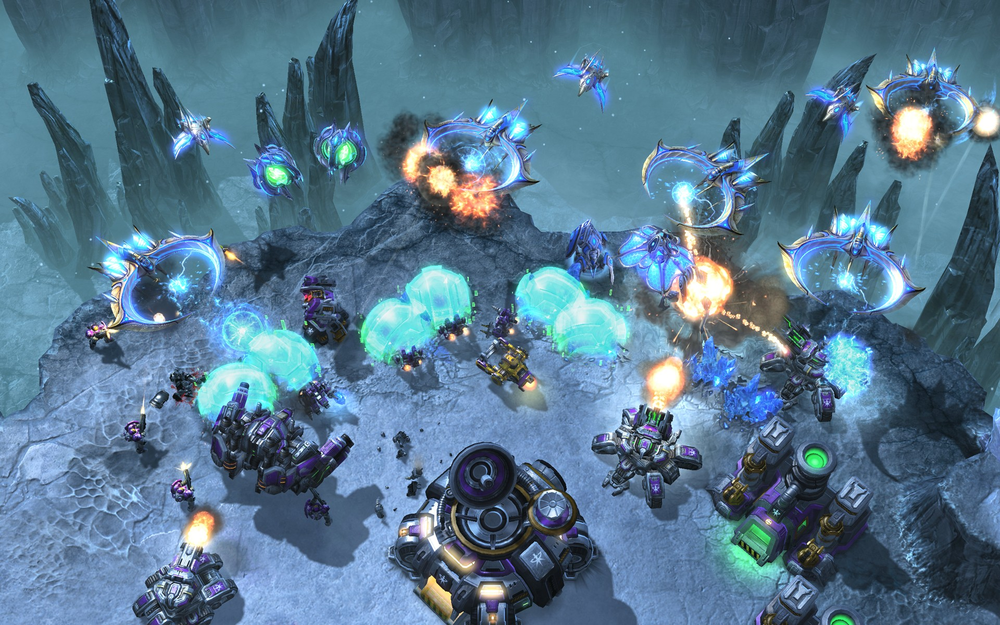

(strictly digitally)
(strictly digitally)
a Web Developer specialising in user-friendly interfaces.

| JavaScript (& JQuery) |
| React |
Node JS (for automation)
|
| Git version control: see my GitHub |
| HTML (including BEM) |
| CSS (& PostCSS) |
| Adobe Suite |
Feb 1 2018
As it happens, they have a tremendous amount to show us. By 'us' and 'we' I'm referring to developers, marketers - basically anyone involved in the decision-making process that leads to a website existing.
I’ve always had a fascination with games. I think the story goes that I held a keyboard and mouse as I was brought into the world. Throughout my childhood, they helped me overcome my fear of failure (or, rather, my fear of trying something for risk of failure). There is a diverse range of games out there, each with different gameplay mechanics and objectives for the players. Throughout all of these differences, there is one thing that separates the good ones from the bad ones.
The good ones provide a masterclass in UX. I’m going to stick to videogames in this post. They’re less reliant on text and are easier to explain in concept.
The first prime example is Portal, by Valve. Players are given access to a ‘Portal Gun’, which can fire two linked wormholes or ‘portals’ onto appropriate surfaces. You can move through them, move objects through them, keep momentum while falling through them, and so on. It sounds simple but the way the puzzles are designed, you have to really think outside the box and break your notions of how space works. I don’t mean space as in the Final Frontier, but rather how objects are positioned in relation to each other.
Portal is so challenging to new players, that it’s actually more effective for improving cognitive abilities than so-called brain training software. So why do more players not wind up quitting out of frustration?
In 2012, Time Magazine named it one of the 100 greatest games ever.
Aside from portals and surfaces, the puzzles are all built from the same reusable pieces: buttons, pressure plates, energy-ball capturers (I don’t know their real name), companion cubes and fizzlers (which stop you carrying objects through but allow the character and gun through). Each concept is introduced one by one. Even the portal gun is kept from the player at the start of the game, so that the player doesn’t get lost with all the freedom they have.
The end result is a product that the player feels completely at home with, which is something that a lot of big-budget releases these days do by making the same game over and over again (I gesture to the FIFAs and the Call of Dutys out there). Portal proves that you don’t have to create cookie-cutter experiences in order to make something usable. In fact, going back to basics and reusing design patterns makes an experience far more engaging. It just requires more thought and - you guessed it - development time.
It’s a matter of looking at the objectives. Games provide clear objectives for the player in the exact same way that we utilise Calls to Action on our sites. A good business-attract site always provides some clear means for the visitor to contact them, and actively draws their attention to that feature. It may not be fun, per se, but it’s definitely engaging - and that shows when looking at bounce rates, click-through rates, and so on.
This leads me into my second point.

The 2017 LCS World Finals attracted 60 million unique viewers.
If you think marketing is hard in general, just wait until you see the games industry summaries. Competition between other studios is an absolute bloodbath, and the number of titles to compete against continues to rise. The number of games released on Steam in 2017 is around the same amount as were released between 2006 and 2014.
Their marketing teams have adapted to this and understand that targeting a niche audience is better for small to medium sized studios, because these teams can't afford TV adverts or to flood cities with billboards. Luckily, the sheer number of genres within games allows them to do just that: niche down.
If I wanted to buy a fast-paced first-person shooter, I'd ask for my money back if I installed it only to be greeted with what is obviously a strategy game. The same is true of any business; sole-trader or corporation. If I were to put 'iOS App Developer' as the title of my homepage, you'd quickly return to your search results when you realise that my skills are Front End Web Development with some backend.
But they're not just niching down because of bounce rate. If I search Steam by genre for 'Strategy' I get a huge number of results. If I search by 'Strategy' and 'Tactical' with 'Online Multiplayer' checked, I get 76 results instead of 8154.
Being clear about what you are selling, and to whom makes it drastically more likely that you bring in business, even if that sample of people is a tiny portion of that audience.
Of course, there is going too niche, but you'll know that when you see it.
This is why I like to know all of the Whys and the Whos about sites that I build for my clients. We both want for the site to be the best it can possibly be for its objective. I'm looking to make a site that appeals to and engages those people.
Starcraft 2 has been the most popular multiplayer real-time strategy game since its launch in 2010
When I've been using sites like YouTube, I'm never spending much - if any - time wondering where something is in their interface. This wasn't always true, but the User Interface has improved over many years and iterations. I know that there are many powerful tools in its system, but they're not thrown at me all at once and I'm given information contextually. This is Depth; giving the user powerful tools with which to complete their tasks, like making a playlist of videos for example.
Contrast this with sites that throw a hundred menu options at you on the landing page, trying to tell you about all of the great things you can achieve with their service or software. You are indeed giving the user powerful tools, but you're also giving them a headache. Complexity is the Adobe Suite while depth is Krita or Paint.net.
Games have taught me some valuable lessons over the years, like how to maintain focus over long periods of time, how to analyse a situation, to always keep trying to succeed. I could go on about this subject for hours, but as I'm hungry and my Chili is simmering, I'll keep it to these three. I hope you learn something from them as well.